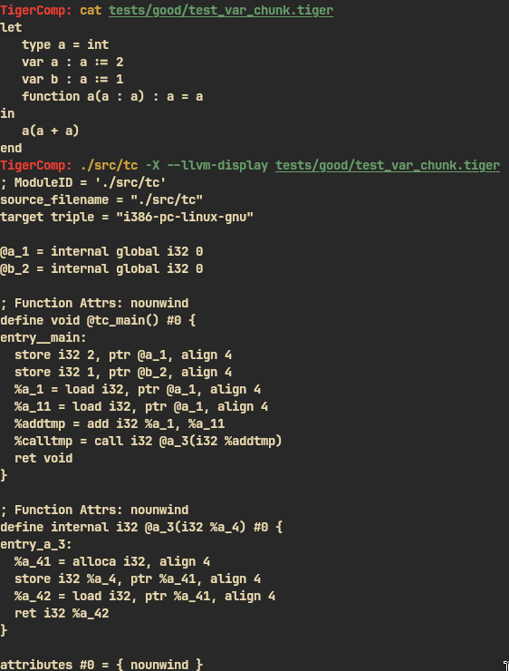
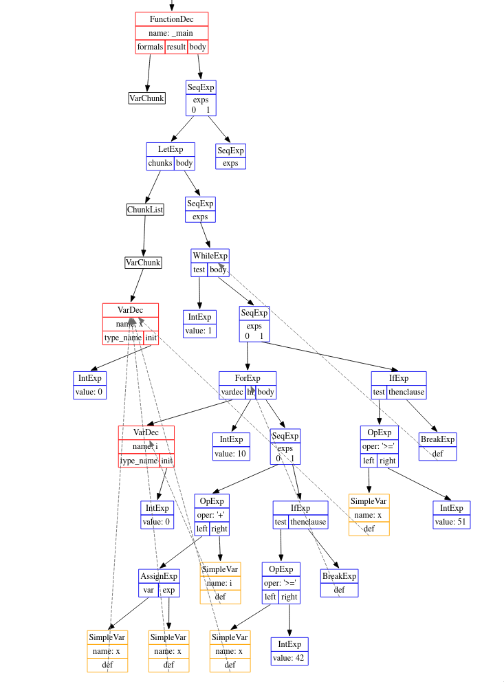

Tiger Compiler
C++ • RE/Flex & Bison • LLVM IR • Autotools
Compiler Architecture • Team-Based Development
Long-term collaborative build of a full compiler for the Tiger programming language, which I helped develop end-to-end as an advanced self-driven engineering project. The work followed an industry-style, multi-stage architecture with clear module separation and long-term maintainability in mind.
I contributed across all major components: source processing (lexing and parsing), building the abstract syntax tree with Visitor patterns, semantic analysis and symbol bindings, type checking, desugaring passes, and translation into efficient LLVM IR backed by a lightweight custom runtime.
School project

